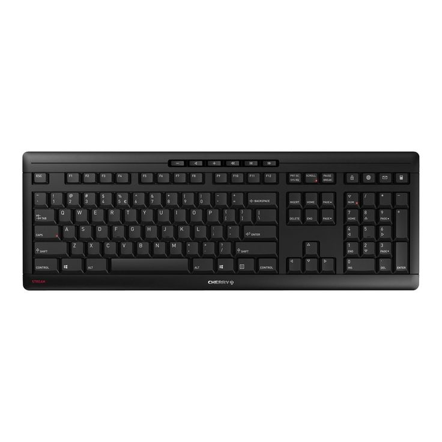
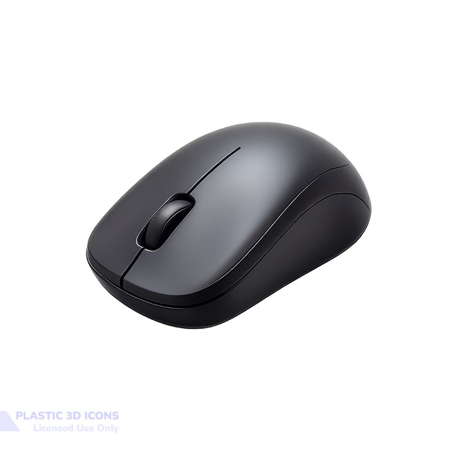
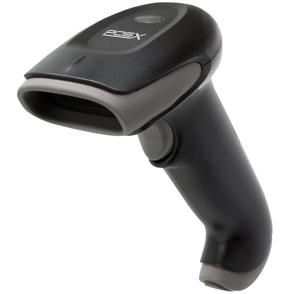
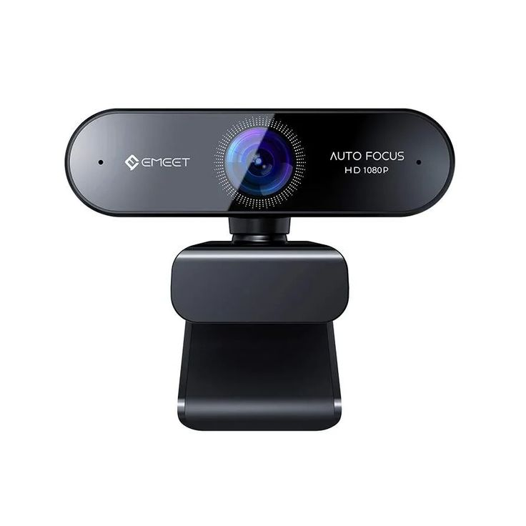
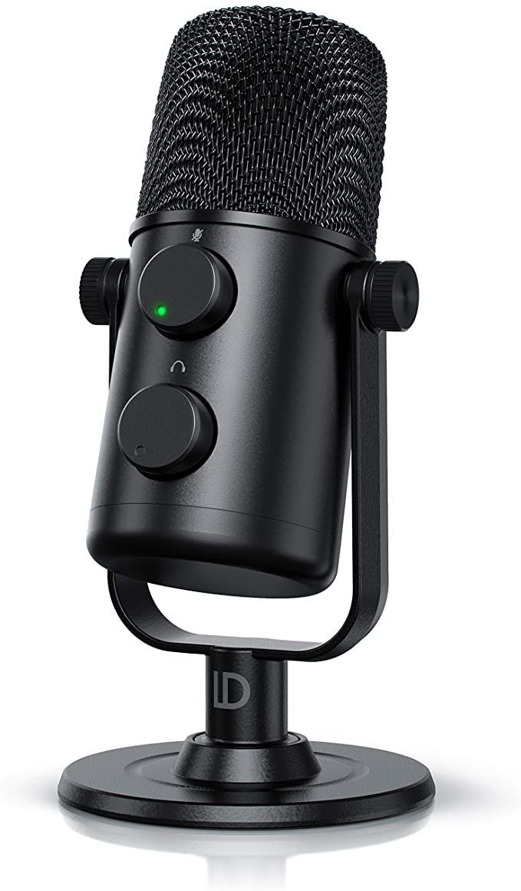
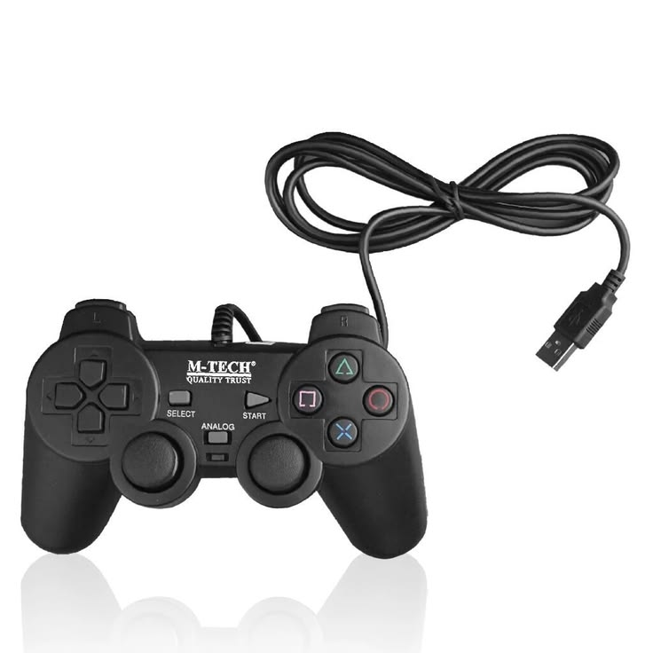

APA ITU INPUT DEVICE?
Input Device (Perangkat Masukan) adalah jenis perangkat keras (hardware) yang berfungsi untuk memasukkan data, informasi, atau instruksi dari pengguna ke dalam sistem komputer untuk diproses.
Sederhananya, perangkat ini adalah "jembatan komunikasi" yang memungkinkan Anda memberi perintah atau memasukkan bahan mentah agar komputer tahu apa yang harus dilakukan.
Contoh Input Device dan Fungsinya
Berbagai macam input device dirancang berdasarkan jenis data apa yang ingin dimasukkan ke dalam komputer:
Teks dan Perintah Dasar:
- Keyboard: Perangkat utama untuk mengetik huruf, angka, simbol, serta memberikan perintah singkat (shortcut).

Navigasi dan Penunjuk:
- Mouse / Touchpad: Digunakan untuk mengarahkan kursor di layar, memilih objek, menggulir halaman, dan melakukan klik untuk mengeksekusi perintah.

Gambar dan Visual:
- Scanner: Berfungsi memindai dokumen atau foto fisik (kertas) dan mengubahnya menjadi format digital di dalam komputer.

- Webcam: Kamera yang terhubung ke komputer untuk menangkap gambar atau merekam video secara real-time.

Suara (Audio):
- Mikrofon (Microphone): Menangkap suara dari luar (seperti suara manusia) dan mengubahnya menjadi data audio digital.

Hiburan dan Game:
- Joystick / Gamepad: Mengirimkan sinyal arah dan tekanan tombol untuk mengontrol karakter atau kendaraan dalam video game.

⬅ Kembali ke Hardware